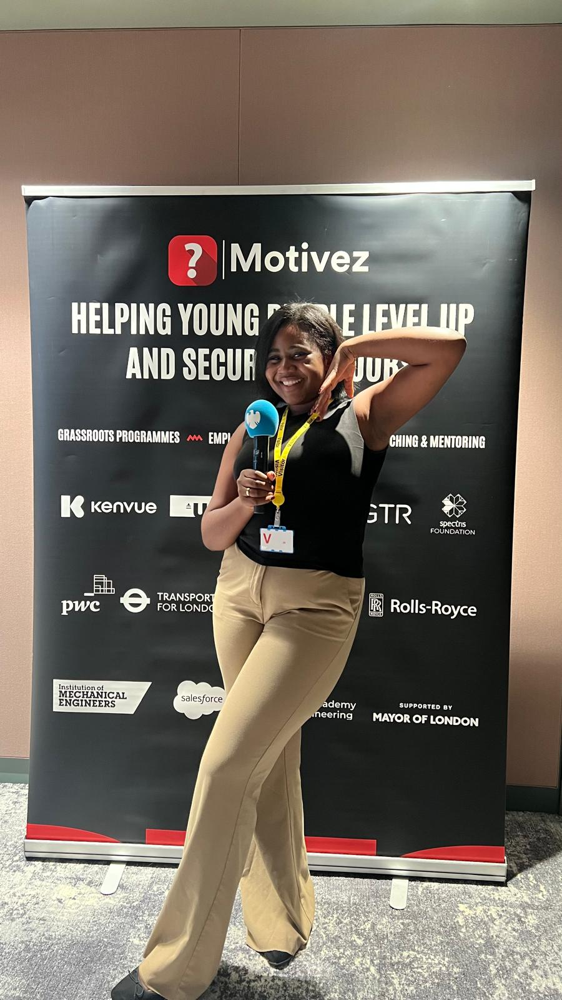

Motivez CIC
Strategic communications and campaign work supporting young people into employment and opportunity, building corporate and community partnerships, and leading storytelling and digital engagement.
Youth EmploymentStrategic Comms
Campaign DevelopmentPartnershipsDigital Engagement
Verified examples, campaign assets and measurable outcomes to be added.